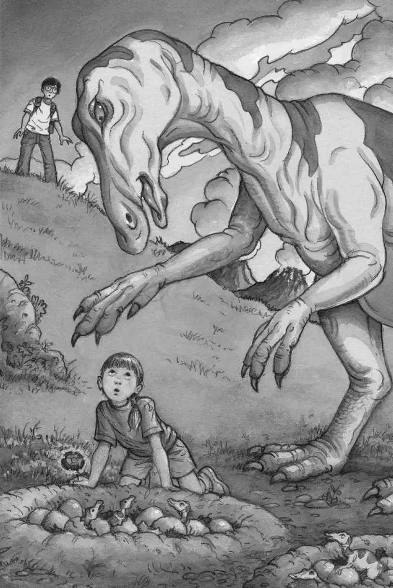
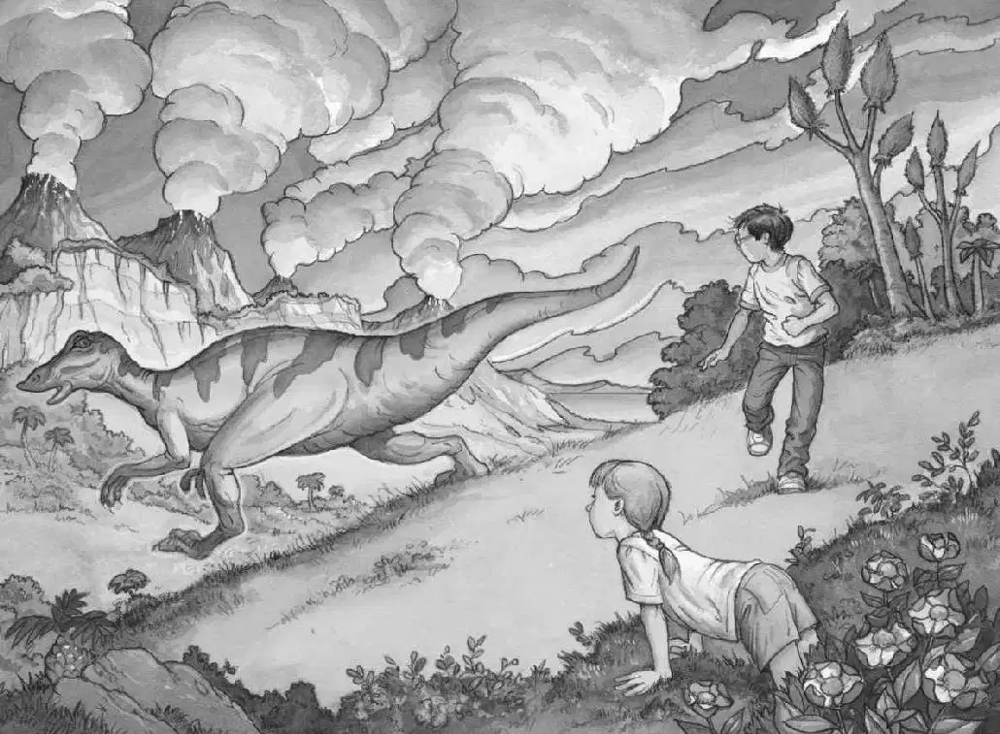

“Annie, look at this!” Jack called. “Look what I found!”
Annie had gone up to the hilltop. She was picking a flower from the magnolia tree.
“Annie, look! A medallion!” shouted Jack.
But Annie wasn’t paying attention to Jack. She was staring at something on the other side of the hill.
“Oh, wow!” she said. Clutching her magnolia flower, she took off down the hill.
“Annie, come back!” Jack shouted.
But Annie had disappeared.
“Oh, brother,” Jack muttered. He stuffed the gold medallion into his jeans pocket.
Then Jack heard Annie shriek.
“Annie?” he said.
Jack heard another sound as well—a deep, bellowing sound, like a tuba.
“Jack! Come here, quick!” Annie called.
Jack raced up the hill. When he got to the top, he gasped.
The valley below was filled with nests—big nests made out of mud. The nests were filled with tiny dinosaurs!
Annie was crouching next to one of the nests. Towering over her was a gigantic duck-billed dinosaur!
“Don’t panic. Don’t move,” said Jack. He stepped slowly down the hill toward Annie.
The huge dinosaur was waving her arms and making her tuba sound.

Jack stopped. He didn’t want to get too close.
He knelt on the ground. “Okay. Move toward me. Slowly,” he said.
Annie started to stand up.
“Don’t stand! Crawl,” said Jack.
Clutching her flower, Annie crawled toward Jack.
Still bellowing, the duck-billed dinosaur followed her.
Annie froze.
“Keep going,” Jack said.
Annie started crawling again.
Jack inched farther down the hill, until he was just an arm’s distance from Annie. He reached out and grabbed her hand. He pulled Annie toward him.
“Stay down,” Jack said. He crouched next to her. “Bow your head. Pretend to chew.”
“Chew?” said Annie.
“Yes,” said Jack. “I read that’s what you do if a mean dog comes at you.”
“She’s no dog, Jack,” said Annie.
“Just chew,” said Jack.
Jack and Annie both bowed their heads and pretended to chew. Soon the dinosaur grew quiet.
Jack looked up. “I don’t think she’s mad anymore,” he said.
“You saved me,” said Annie. “Thanks.”
“You have to use your brain, Annie,” said Jack. “You can’t just go running to a nest of babies. There’s always a mother nearby.”
Annie stood up.
“Annie, don’t!” said Jack.
Too late.
Annie held out her magnolia flower to the dinosaur.
“I’m sorry I made you worry about your babies,” she said.
The dinosaur moved closer to Annie. She grabbed the flower from her hand. She reached for another.
“No more,” said Annie.
The dinosaur let out a sad tuba sound.
“But there are more flowers up there,” Annie said. She pointed to the top of the hill. “I’ll get you some.”
Annie hurried up the hill.
The dinosaur waddled after her.
Jack quickly looked at the dinosaur babies. Some were crawling out of their nests.
Where are the other mothers? Jack wondered.
Jack took out the dinosaur book. He flipped through the pages. He found a picture of some duck-billed dinosaurs. He read the caption:
The Anatosauruses lived in colonies. While a few mothers babysat the nests, others looked for food.
So there were probably more mothers close by, looking for food.
“Hey, Jack!” Annie called.
Jack looked up. Annie was at the top of the hill, feeding magnolia flowers to the giant Anatosaurus!
“Guess what?” Annie said. “She’s nice, too.”
Suddenly the Anatosaurus made her terrible tuba sound. Annie crouched down and started to chew.
The dinosaur charged down the hill. She seemed afraid of something.
Jack put the book on top of his pack. He hurried to Annie.
“I wonder why she ran away,” said Annie. “We were starting to be friends.”
Jack looked around. What he saw in the distance almost made him faint!
An enormous monster was coming across the plain.

The monster was walking on two strong legs. It was swinging a long, thick tail and dangling two tiny arms.
It had a huge head—and its jaws were wide open.
Even from far away Jack could see its long, gleaming teeth.
“Tyrannosaurus rex!” whispered Jack.